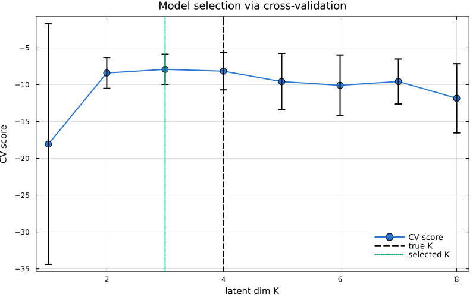
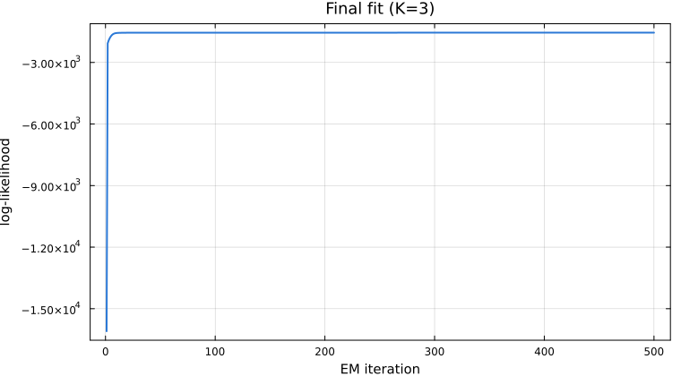

Choosing latent dimensionality
The latent dimension $K$ is the most important hyperparameter of an LDS. Cross-validation works for any state-space model — Gaussian, Poisson, nonlinear, switching — so we demonstrate it here with $K$-fold CV over candidate dimensions.
using StateSpaceDynamics
using LinearAlgebra
using Random
using Plots
using Statistics
using StableRNGs
using Printf
rng = StableRNG(12345);Model
A Gaussian LDS with $K_\text{true} = 4$ latent dimensions: two oscillating modes and two decaying modes, observed through a $D = 10$ dimensional Gaussian channel.
K_true = 4
D = 10
T = 300
θ = π / 12
λ = 0.92
A_true = [cos(θ) -sin(θ) 0.0 0.0;
sin(θ) cos(θ) 0.0 0.0;
0.0 0.0 λ 0.0;
0.0 0.0 0.0 0.85 * λ]
Q_true = 0.05 * Matrix(I(K_true))
b_true = zeros(K_true)
Random.seed!(rng, 42)
C_true = randn(rng, D, K_true) * 0.6
d_true = zeros(D)
R_true = 0.1 * Matrix(I(D))
μ0_true = zeros(K_true)
Σ0_true = 0.1 * Matrix(I(K_true))
true_lds = LinearDynamicalSystem(;
state_model=GaussianStateModel(A_true, Q_true, b_true, μ0_true, Σ0_true),
obs_model=GaussianObservationModel(C_true, R_true, d_true),
latent_dim=K_true,
obs_dim=D,
fit_bool=fill(true, 6),
);
latent_states, observations = rand(rng, true_lds, T);Cross-validation
For each candidate $K$ we hold out a contiguous chunk of timesteps, fit on the remainder, and score by validation log-likelihood. The mean across folds gives the CV score.
K_candidates = 1:8
n_folds = 5
fold_size = T ÷ n_folds
cv_scores = zeros(length(K_candidates), n_folds)
cv_mean = zeros(length(K_candidates))
cv_std = zeros(length(K_candidates))
for (k_idx, K) in enumerate(K_candidates)
fold_scores = zeros(n_folds)
for fold in 1:n_folds
val_start = (fold - 1) * fold_size + 1
val_end = min(fold * fold_size, T)
train_idx = vcat(1:(val_start - 1), (val_end + 1):T)
val_idx = val_start:val_end
y_train = observations[:, train_idx]
y_val = observations[:, val_idx]
A_init = 0.9 * Matrix(I(K)) + 0.1 * randn(rng, K, K)
Q_init = 0.1 * Matrix(I(K))
b_init = zeros(K)
C_init = randn(rng, D, K) * 0.5
R_init = 0.2 * Matrix(I(D))
d_init = zeros(D)
μ0_init = zeros(K)
Σ0_init = 0.1 * Matrix(I(K))
candidate = LinearDynamicalSystem(;
state_model=GaussianStateModel(A_init, Q_init, b_init, μ0_init, Σ0_init),
obs_model=GaussianObservationModel(C_init, R_init, d_init),
latent_dim=K,
obs_dim=D,
fit_bool=fill(true, 6),
)
try
fit!(candidate, y_train; max_iter=200, tol=1e-6, progress=false)
val_ll = loglikelihood(candidate, y_val)
fold_scores[fold] = val_ll / length(val_idx)
catch err
@warn "Fold $fold failed for K=$K" exception=err
fold_scores[fold] = -Inf
end
end
cv_scores[k_idx, :] = fold_scores
cv_mean[k_idx] = mean(fold_scores)
cv_std[k_idx] = std(fold_scores)
@printf("K=%d: CV score = %.3f ± %.3f\n", K, cv_mean[k_idx], cv_std[k_idx])
end
best_k_idx = argmax(cv_mean)
best_K = K_candidates[best_k_idx]
println("True K=$(K_true), selected K=$(best_K)")
p_cv = plot(K_candidates, cv_mean;
yerror=cv_std, marker=:circle, markersize=6, linewidth=2,
color="#2a78d6", xlabel="latent dim K", ylabel="CV score",
title="Model selection via cross-validation", label="CV score",
legend=:bottomright, size=(800, 500))
vline!(p_cv, [K_true]; linestyle=:dash, color=:black, linewidth=2,
label="true K")
vline!(p_cv, [best_K]; linestyle=:dot, color="#1baf7a", linewidth=2,
label="selected K")
Final fit
Refit on the full dataset with the CV-chosen $K$.
A_final = 0.9 * Matrix(I(best_K)) + 0.1 * randn(rng, best_K, best_K)
Q_final = 0.1 * Matrix(I(best_K))
b_final = zeros(best_K)
C_final = randn(rng, D, best_K) * 0.5
R_final = 0.2 * Matrix(I(D))
d_final = zeros(D)
μ0_final = zeros(best_K)
Σ0_final = 0.1 * Matrix(I(best_K))
final_lds = LinearDynamicalSystem(;
state_model=GaussianStateModel(A_final, Q_final, b_final, μ0_final, Σ0_final),
obs_model=GaussianObservationModel(C_final, R_final, d_final),
latent_dim=best_K,
obs_dim=D,
fit_bool=fill(true, 6),
)
final_lls = fit!(final_lds, observations; max_iter=500, tol=1e-8);
x_learned, _ = smooth(final_lds, observations)
y_pred = final_lds.obs_model.C * x_learned .+ final_lds.obs_model.d
reconstruction_error = mean(abs2, observations - y_pred)
@printf("Reconstruction MSE: %.6f\n", reconstruction_error)
p_final = plot(final_lls; xlabel="EM iteration", ylabel="log-likelihood",
title="Final fit (K=$best_K)", lw=2, color="#2a78d6", legend=false)
This page was generated using Literate.jl.